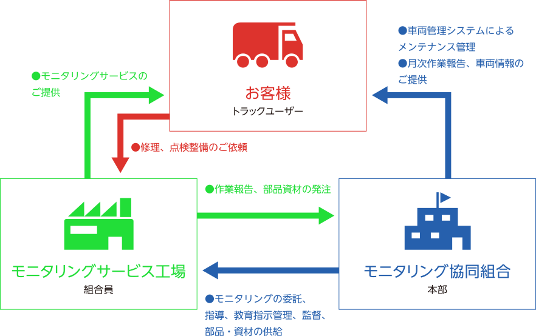

TRUCK MONITORING SERVICE
トラックモニタリングサービスとは

モニタリングとは「チェックし、監視する」という意味で、従来のメンテナンスの枠を超えた、新しい車両管理システムです。
整備作業に必要な機材を搭載した「モニタリングサービスカー」で、
出張サービスによる予防整備を実施、一台一台のトラックに最適なメンテナンス管理を実施します。
整備車輌の回送業務が不要
特装「モニタリングサービスカー」でお客様のもとへ出張して点検整備を実施します。
年間修理費を大幅に削減
計画的な点検整備で年間整備費を予算化。大きな故障も防げ、修理費用も削減できます。
車輌管理業務を合理化
点検、車検の日時、整備履歴などをトータルに代行管理します。
コストダウンを実現
「メンテナンス費用を削減したい」「予想外の故障修理費の発生が悩み」等の問題を解決。
的確な予防整備の実施で車両の修理費用の負担を軽減、保守管理費のコストダウンを実現します。
的確な予防整備の実施で車両の修理費用の負担を軽減、保守管理費のコストダウンを実現します。
稼働率アップに貢献
「整備不良故障による稼働率低下が悩み」「整備のための持ち込みの手間と時間が無駄」等の問題を解決。
点検スケジュールに基づいた出張サービスにより、車両運行の効率化の妨げとなっている要因を解消します。
点検スケジュールに基づいた出張サービスにより、車両運行の効率化の妨げとなっている要因を解消します。
車輌管理の合理化をサポート
「多くの車両管理の手間とコストが悩み」「煩雑な車両管理業務を効率化したい」等の問題を解決。
コンピュータによる一台一台の点検整備のスケジュール管理により、御社内の車両の管理業務をバックアップ！
コンピュータによる一台一台の点検整備のスケジュール管理により、御社内の車両の管理業務をバックアップ！
Login for exclusive use of the member
組合員専用ページ